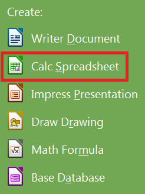

Use LibreOffice Writer to create all sorts of documents and letters.
Steps
Open the LibreOffice Suite package either by clicking on the icon on your desktop, or searching for "LibreOffice 4.3" in the start menu.
Once the program opens, under Create, click Calc Spreadsheet to open LibreOffice Calc. (Figure 10)

Figure 10: Creating a new Calc Spreadsheet
Use the tools at the top of the window to modify your spreadsheet. Input, filter, and sort your data, or create a table or chart.(Figure 11)
Figure 11: The LibreOffice Calc user interface.
When finished editing, or to ensure the safety of your spreadsheet, you need to save your document. Do this by clicking on File on the top toolbar then click on Save As...(Figure 12)
You should save your work periodically to avoid losing progress.
Figure 12: Getting to the Save dialog in Calc
Name your document and select where to save your spreadsheet, then click Save.
Either keep working on your spreadsheet, or if you are finished, close the program by clicking the X at the top right of the window.